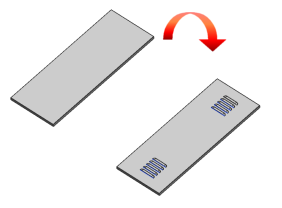

Estimated time to complete: 4–6 minutes
In this activity, you will add a pattern of louvers to a locker door. You will:
Create a louver feature.
Create patterns of louvers.

Open the Create patterns of louvers activity.